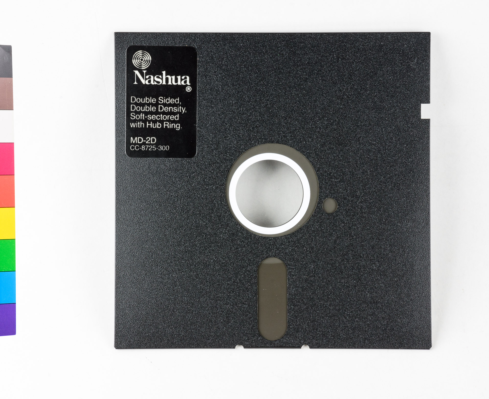
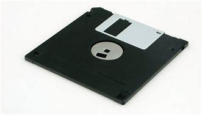
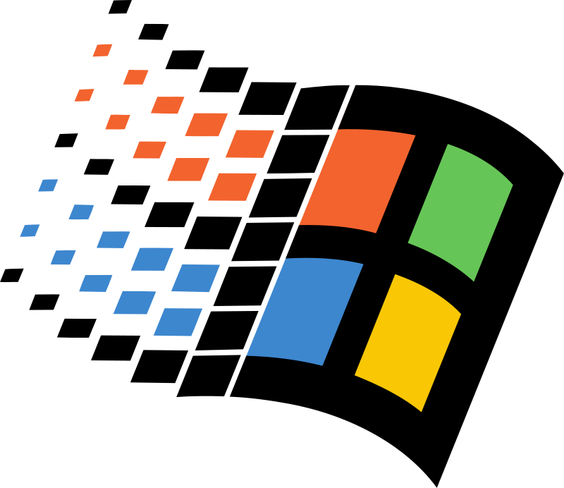
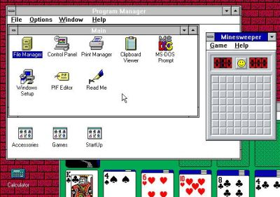

Claramente, no voy a agobiarlos explicándoles todos los comandos que pueden hacerse con lo que conocemos actualmente como "símbolo de sistema" y para qué sirven, la intención era que vieran de manera general la estructura de archivos ya que es la misma de windows, sólo que este último presenta una interfaz amigable, pero el proceso es el mismo.
Dejando esto claro, podemos avanzar al siguiente nivel: Windows como gestor de archivos y sistema operativo.
Windows apareció en 1985 como una extensión gráfica de MS-DOS (el sistema operativo que acabamos de ver). Haciendo más fácil y amigable todos los procesos que, como vimos, parece propio de hackers y ratones de laboratorio.
Con una compu nueva (en 1993), la encendíamos y veíamos la pantalla negra con el símbolo del sistema señalando nuestra preciosa unidad C:\>.
La compu anterior (de 1985) contaba con dos unidades de disco que aceptaban diskettes de 5 y 1/4 en uno de los cuales tenía grabado el juego Prince of Persia. En esta nueva, más moderna, cuenta con dos unidades de diskette 3 y 1/2, más modernos, pequeños y de más capacidad: 1.14 megas.
Porque las capacidades se miden en bits. Un bit es una unidad que puede ser 1 o 0 (uno o cero). Y esto es así porque las compus trabajan con corriente eléctrica, y la corriente eléctrica sólo puede hacer dos cosas, estar y no estar; como un bombillo, sólo puede estar encendido o apagado. Entonces si tienes varios bits juntos, los searas en grupos de 8, y caga grupo de 8 se llamará Byte.
Luego, si pudieras juntar 1024 Bytes, tendrías un Kilobyte, y claro, 1024 kilobytes formarían un MegaByte.
En fin, sacabas de tu maletín una cajita que contenía cinco diskettes con el rótulo Windows 3.1 y procedías a instalarlo. Escribías "A:" para cambiar de unidad. Luego insertabas el diskette con el rotulo Windows 3.1 disco 1/5 y escribías "setup" que es un archivo con extensión .exe que inicia el proceso de instalación.
Luego de un rato de esperar y de oír curiosos ruidos como si la máquina realmente estuviera pensando, aparecía en la pantalla un mensaje: Inserte disco 2 en la unidad A: o B:. Obedecías y una vez más esperaste hasta que otro mensaje te pedía el disco 3 y así hasta el último.
finalmente, tras una instalación exitosa, había que reiniciar el equipo, luego, ante el símbolo C:\> tecleabas el comando "win" y listo, el gestor de archivos Windows tomaba el control de la máquina, mostrándote por primera vez una interfaz gráfica.

En este entorno hace su aparición también un dispositivo curioso: el ratón, ya para 1993 tenían dos botones, pero los anteriores, sólo uno, y era el equivalente a la tecla intro o "enter". Y servía este ratón para mover un cursor en forma de flecha en la pantalla y que hacía cosas si tocábamos el botón sobre algún icono.
Lo que restaba entonces era simplemente explorar el nuevo entorno que se nos presentaba, una pantalla dividida en ventanas y dentro de estas, había iconos bastante representativos de sus funciones.
Si bien trabajar con el ratón puede parecer algo de lo más natural, no lo es realmente para quien no los ha manipulado antes.
Las primeras versiones de Windows, incorporaron juegos como "buscaminas" y "solitario". No eran para entretener, meramente. Fue la forma que encontró la ingeniería de software para incluir el uso de estos dispositivos nuevos.
Así, "buscaminas" enseñaba el uso del botón izquierdo y derecho del ratón, y "solitario" enseñaba la función de arrastrar y soltar.